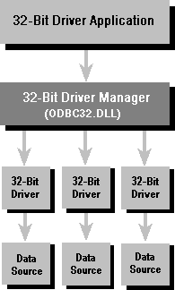

You can run 32-bit applications with 32-bit drivers on Windows 95 and Windows NT. The 32-bit applications and the 32-bit drivers use the Win32 API.
The following figure shows how 32-bit applications communicate with 32-bit drivers. The application calls the 32-bit Driver Manager, which in turn calls 32-bit drivers.
Using 32-Bit Applications with 32-Bit Drivers

Important Do not use the 32-bit thunking installer DLL on Windows NT. Although it has the same file name as the 32-bit installer DLL, it is a different DLL.
You can manage data sources for 32-bit drivers through the ODBC or 32-bit ODBC Control Panel device.
The ODBC component of the Data Access SDK includes the following components for running 32-bit applications with 32-bit drivers. They are in the \Redist directory.
| File | Name |
| ODBC32.DLL | 32-bit Driver Manager |
| ODBCCP32.DLL | 32-bit installer DLL |
| ODBCAD32.EXE | 32-bit Administrator program |
| ODBCINST.HLP | Installer Help file |
| MSVCRT40.DLL | C run-time library |